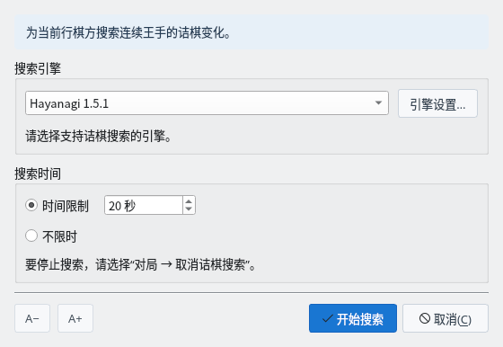
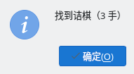
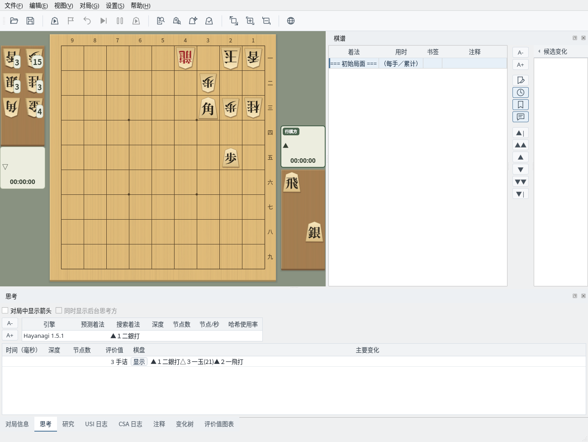
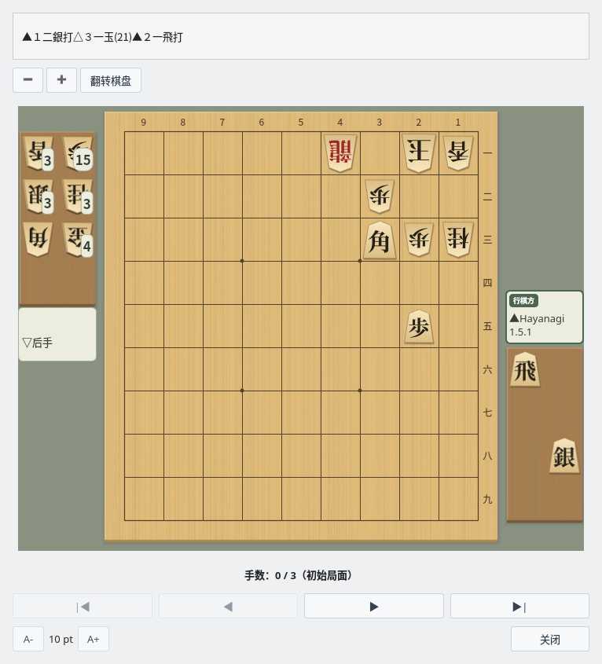
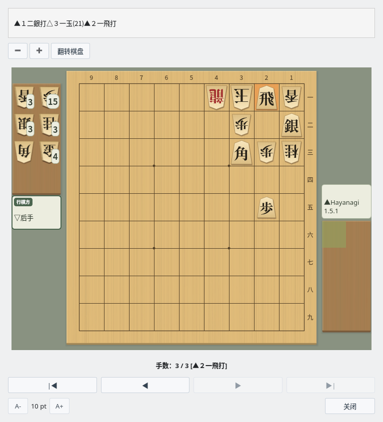

诘棋搜索
用 USI 引擎调查当前局面是否有诘
截图在 Linux 上以简体中文界面拍摄。
准备局面
在棋盘上显示要调查的局面
显示要调查的局面
诘棋搜索从棋盘上显示的局面出发，搜索行棋方以连续王手将死对方玉的手顺。可以直接调查打开棋谱后选择的局面或对局结束时的局面。在对局、研究、棋谱分析和局面编辑过程中无法使用。
如果要像诘棋那样从头创建局面，请选择“编辑”→“开始编辑局面”摆放棋子，再点击“结束编辑”确定（盘面编辑）。请让进攻方成为行棋方。本指南使用“编辑”→“诘棋布局”摆出的例题局面。
搜索设置
在搜索诘棋对话框中选择引擎和搜索时间
搜索诘棋对话框
选择“对局”→“搜索诘棋…”打开对话框，选择引擎和搜索时间后点击“开始搜索”。所选的引擎和搜索时间下次也会沿用。

搜索诘棋对话框：选择引擎和搜索时间后点击“开始搜索”
| 项目 | 说明 |
|---|---|
| 搜索引擎 | 从“设置”→“引擎设置…”中注册的 USI 引擎中选择。点击“引擎设置…”按钮可以更改所选引擎的选项。 |
| 时间限制 | 以秒为单位指定搜索时间的上限（默认 20 秒）。 |
| 不限时 | 一直搜索，直到判明是否有诘。 |
| A− / A+ | 更改对话框的文字大小。 |
诘棋搜索需要支持 USI 诘棋搜索（go mate）的引擎。可以注册 ShogiBoardQ 的 Hayanagi（仅 Linux 版附带，注册方法请参阅 Hayanagi 指南），或 komori-n 开发并公开的诘棋引擎 KomoringHeights。引擎的注册方法请参阅引擎注册指南。
搜索过程中可以选择“对局”→“取消诘棋搜索”停止搜索。停止后不会显示结果。
搜索结果
搜索结束后会显示结果，诘杀手顺保留在思考标签页中
结果消息
搜索结束后，会用消息显示结果。

结果消息：找到诘棋（3 手）
| 消息 | 含义 |
|---|---|
| 找到诘棋（N 手） | 找到了诘杀。N 是包括守方应着在内的诘杀手数。 |
| 无诘 | 已判明连续王手无法将死。 |
| 未能在限定时间内判定诘棋 | 在指定的时间内未能判明是否有诘。请延长时间，或选择“不限时”重新搜索。 |
| （引擎）尚未实现 | 所选引擎不支持诘棋搜索（go mate）。 |
思考标签页中的诘杀手顺
找到诘杀后，“思考”标签页中会增加一行诘杀手顺。“评价值”列显示“3 手诘”这样的诘杀手数，“主要变化”列显示诘杀手顺。

思考标签页：评价值为“3 手诘”，主要变化为诘杀手顺
主要变化显示
在棋盘上逐手回放诘杀手顺
打开主要变化显示窗口
在思考标签页的诘杀手顺行中，点击“棋盘”列的“显示”，即可打开主要变化显示窗口。上方显示诘杀手顺，下方显示搜索的局面。

主要变化显示：初始局面（手数 0 / 3）
回放诘杀手顺
点击“▶”逐手前进，点击“▶|”前进到诘杀的局面。上一步着法会在棋盘上强调显示，手数栏显示当前是第几手。

主要变化显示：▲２一飛打将死（手数 3 / 3）
| 按钮 | 操作 |
|---|---|
| |◀ ／ ▶| | 回到初始局面／前进到最后的局面（诘杀局面） |
| ◀ ／ ▶ | 后退一手／前进一手 |
| − ／ ＋ | 缩小／放大棋盘（在棋盘上按住 Ctrl 滚动鼠标滚轮也可以） |
| 翻转棋盘 | 将棋盘旋转 180 度 |
| A- ／ A+ | 更改窗口的文字大小 |